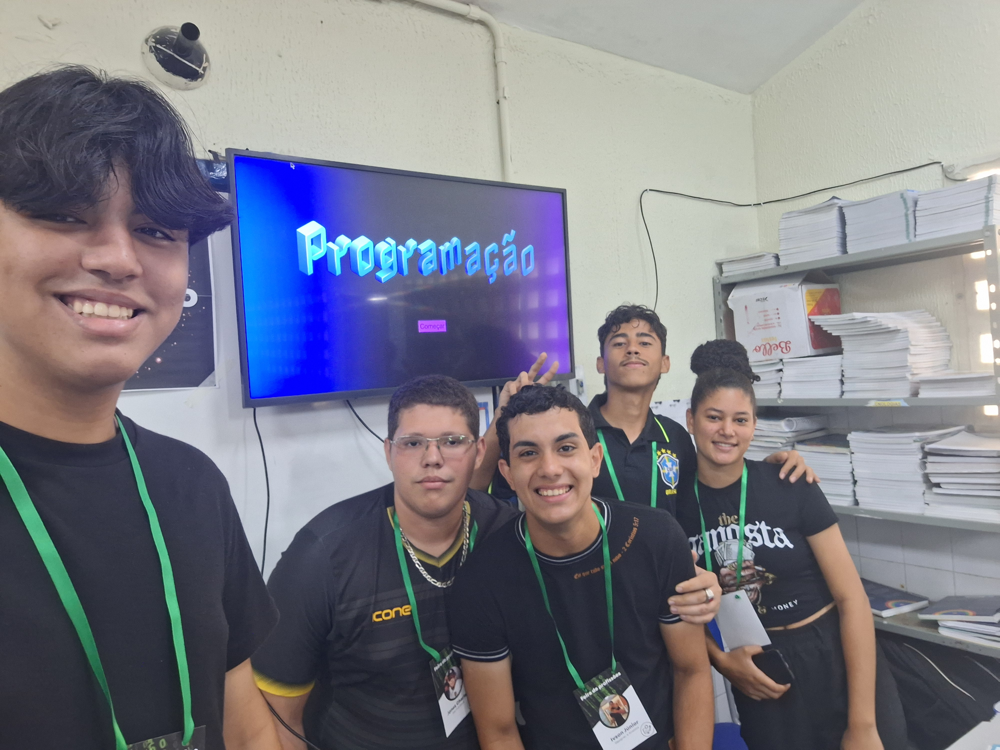

Olá, somos a Equipe de Programação do 2°C!
Nossa apresentação foi baseada na carreira de programação, pois, é a profissão está sendo mais desejada no mercado, porém, também é a profissão que menos tem profissionais qualificados para a área.
O programador tem o papel essencial no mundo da tecnologia, e, por sua vez, tem o objetivo de criar, atualizar e capacitar sistemas, programas, sites, software de qualquer máquina.
A programação tem como o objetivo de evoluir mais e mais o mundo da tecnologia. Dependendo da área trabalhada, a programação pode ser essencial no nosso dia-a-dia.
